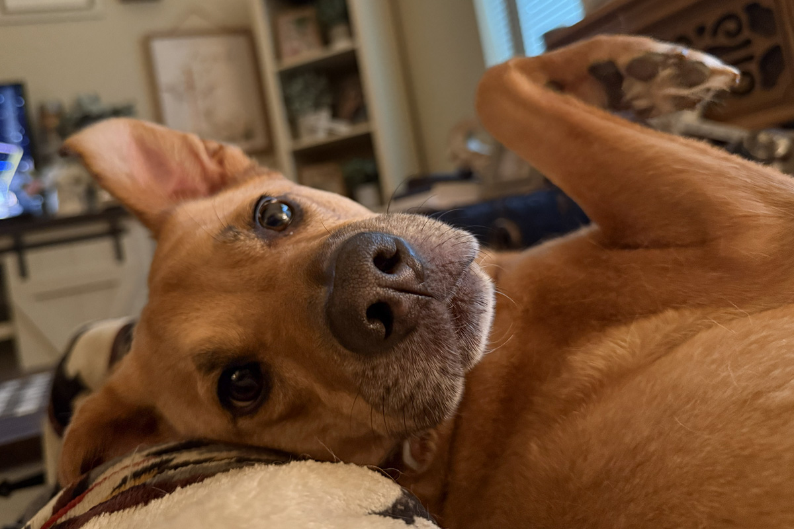
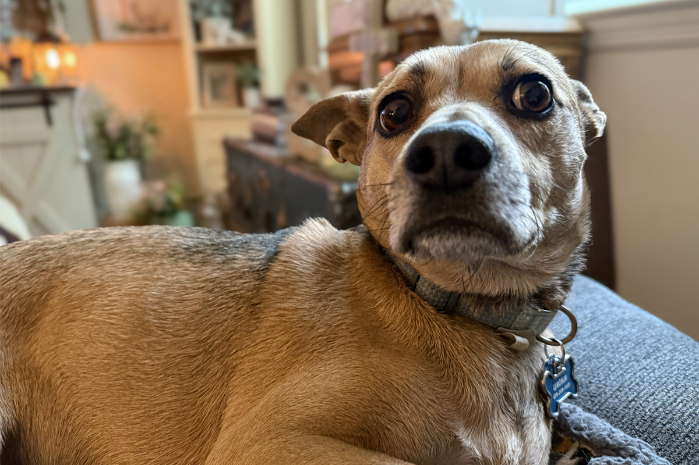

Digital Art
Scripture-inspired digital art is at the heart of what I create today. Through thoughtful design, meaningful words, and visual storytelling, I create pieces intended to bring God’s truth into homes and everyday spaces.
 Replace with: a photo of Sue
Replace with: a photo of Sue
Daughter of God. Digital artist.
All glory to Him.Who I Am
Hi, I’m Sue—the digital artist behind Shutter & Psalm.
Before anything else, I am a daughter of God. My identity is rooted in Christ, and my creativity is one of the ways I worship Him, serve others, and share what He has done in my life.
My identity is not found in what I create, what I accomplish, or how my work is received. It is rooted in His love, His grace, and the new life He has given me.
Shutter & Psalm flows from that identity. This work does not define me; it is one way I can serve the One who does.
Beyond the Studio
Originally from Massachusetts, I have loved art for as long as I can remember. I also love technology, learning new things, and discovering new ways to bring an idea to life. That combination eventually led me to earn a bachelor’s degree in digital filmmaking and video production.
When I’m not creating, I work as a social worker supporting adults with intellectual and developmental disabilities. You can also usually find me reading my Bible, praising God, spending time at church, traveling, decorating, antiquing, drinking coffee, or hanging out with my dogs.
I love horses, cows, country music, Christian music—and honestly, a little bit of everything. I’m also an enthusiastic supporter of pumpkin-spice anything.
Whether I’m exploring somewhere new, arranging a room, creating digital art, or standing behind a camera, I tend to see beauty in every space. I believe there is always something meaningful waiting to be noticed.
 Your personal creation
Your personal creation
Finley
LincolnMy Testimony
 Replace with: worship
Replace with: worship Replace with: Bible study
Replace with: Bible study Replace with: baptism
Replace with: baptismI was raised Catholic and baptized as an infant, but I drifted away from faith early in life. For many years, I did not believe in the God of the Bible.
That began to change in late 2024, when a friend asked me a simple question: “If you don’t believe in God, what do you believe in?”
At the time, I told her I believed in a higher power—just not the God described in the Bible. That answer began a series of conversations between us. Her understanding of God was different from anything I had heard before, and it made me curious.
For months, I researched, read, asked questions, and challenged what I was hearing. My friend and I spent many nights talking about God, and I questioned her about nearly everything she believed. Slowly, the answers I found began changing my heart.
On February 24, 2025, we were having another one of those conversations when she finally stopped and asked me, “Are you saying you believe?”
I sat quietly and thought about it for nearly ten minutes before answering, “Yes.”
We celebrated, and she held my hands as she led me through the sinner’s prayer. We could feel the presence of the Holy Spirit in that room, and neither of us could hold back our tears. It remains one of the most unforgettable moments of my life.
I began attending church and reading the Bible every day. Then, in August 2025, I was baptized again—this time by my own choice—in Lake Lanier.
Since then, I have continued seeking opportunities to serve, share God’s Word and the good news of Jesus Christ, and help bring others closer to Him.
Creativity With a Greater Purpose
1 Peter 4:10–11 · Matthew 28:19
First Peter 4:10–11 reminds us that each of us has been given gifts and are called to use them in service to others and for the glory of God. For me, that calling takes shape through creativity.
Shutter & Psalm was born from my desire to use my creative gifts to share the Gospel and the love, truth, and grace of Jesus Christ.
Inspired by Christ’s call in Matthew 28:19 to go and make disciples, I want the things I create to do more than make a space beautiful. I want them to carry a message that matters.
What I Create
Two creative paths, united by one purpose: to point hearts back to their Creator.
Scripture-inspired digital art is at the heart of what I create today. Through thoughtful design, meaningful words, and visual storytelling, I create pieces intended to bring God’s truth into homes and everyday spaces.

Photography is also becoming part of that story. As I build my collection, I hope to capture glimpses of the beauty God has placed throughout His creation—and point that beauty back to its Creator.
 Replace with: worship
Replace with: worshipMy Prayer for This Work
My hope is that people encounter Christ through this work in every season of life—in moments of joy and celebration, as well as sorrow and pain.
I pray that each piece offers encouragement, helps someone recognize His grace and love, and inspires a deeper relationship with Him.
If something I create reminds even one person that God is near, encourages them to open His Word, or helps lead their heart toward Christ, then it has fulfilled its purpose.
Ultimately, I want to use what God has given me to share His truth and reflect His beauty.
Explore the Collection